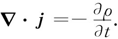

很明显，实物的能量并不守恒。当一物体辐射光时它就失去能量。然而，这部分损失的能量可以用其他形式来描述，比如说用光的形式。因此，要是没有考虑到与光、或普遍地说，与电磁场联系着的能量，那么能量守恒的理论是不完整的。我们现在着手处理场的能量守恒和动量守恒。肯定不可能只论述其中一个而不涉及另一个，因为在相对论中它们是同一个四维矢量的不同方面。
早在第1卷中，就曾讨论过能量守恒，那时只是说世界上的总能量恒定不变。现在要将能量守恒律的概念在一个重要方面加以推广——在某些细节 方面说明能量是怎样 守恒的。这一新的定律将说明：如果能量离开一个区域，那是由于它通过该区域的边界流 出去的。这是比不加这样一种限制的能量守恒要强一点的规律。
为看清这一说法的含义，让我们先来考察一下电荷守恒律是怎样产生的。过去我们对电荷守恒是这样描述的：有一电流密度j和一电荷密度ρ，当某处的电荷减少时就必然会有电荷从该处流出，我们把它称为电荷守恒。这个守恒律的数学形式是
 （27.1）
上述定律得出如下结论，即在世界上的总电荷总保持恒定不变——永远不会有任何净电荷的获得或丧失。然而，总电荷很可能按另一种方式保持不变。假定在某点（1）附近有某个电荷Q1 ，在隔某段距离的点（2）附近则没有什么电荷（图27-1）。现在假定：随着时间的推移，电荷Q1 会逐渐消失，而与此同时 随着Q1 的减少却有某些电荷Q2 在点（2）处出现，并且以这样一种方式进行，即使得在每个时刻Q1 与Q2 之和是一常数。换句话说，在任一中间态上Q1 所丧失的量应该加到Q2 上，那么世界上电荷的总量才会守恒。这是一种“世界范围”的守恒，而不是我们将称之为“局域”性的守恒，因为要使电荷从点（1）转移至点（2）并不要求在两点之间的空间里任何一处出现。就局部来说，该电荷是真正“丧失”了。
图27-1 两种使电荷守恒的方式：（a）Q1 +Q2 为一恒量；（b）dQ1 /dt=-∫j·nda=-dQ2 /dt
这一种“世界范围”的守恒律在相对论中会碰到困难。在相隔一定距离的各个点，“同时”这个概念对于不同参照系是彼此不相等的。两事件在某个参照系中是同时的，但对于从旁运动而过的另一个参照系来说则不是同时的了。在上述那种“世界范围”的守恒律中，要求从Q1 上丧失的电荷应该同时 出现在Q2 上。否则就会出现电荷并不守恒的某些时刻。因此如不将其造成一个“局域”的守恒定律，似乎就没有办法使电荷守恒律在相对论上成为不变式。事实上，洛伦兹的相对论不变性这一要求，似乎以令人惊异的方式限制了可能有的自然规律。比方，在现代量子场论中，人们往往希望通过承认我们称为“非局域”性的互作用——这里 的某事件会直接影响到那里 的某事件——来改变理论，但却陷入了相对论性原理上的困难。
“局域”守恒还含有另一种概念。它表明电荷之所以能够从一处移至另一处，在它们之间的空间里必须有某个事件发生。要描述该定律，我们不仅需要电荷密度ρ，而且也需要另一类量，即j，它是给出通过一个截面的电荷流动速率的一个矢量。于是这个流量就同电荷密度的变化率通过式（27.1）而互相联系起来，这是守恒律中更为极端的一种。它表明电荷按某一特殊形式守恒——“局域”地守恒。
事实证明，能量守恒是一种局域 过程。在某个给定空间区域里不但存在能量密度，而且也存在代表穿越表面的能量流动速率的矢量。例如，当有一个光源向外辐射时，我们能够求出从该源发射出来的光能。如果设想某个包围着该光源的数学曲面，那么从这个曲面内部所损失的能量就等于穿越该曲面流出去的能量。